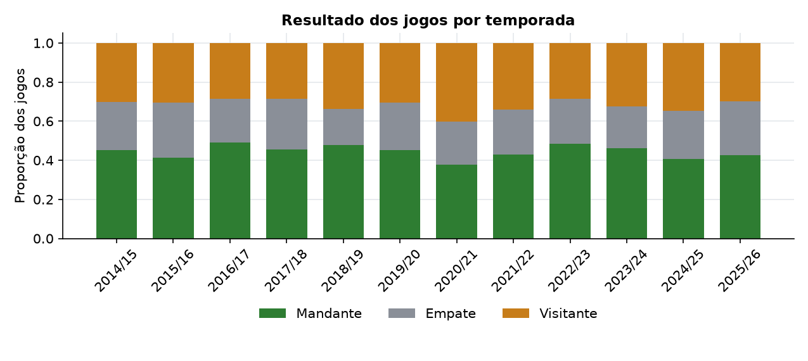
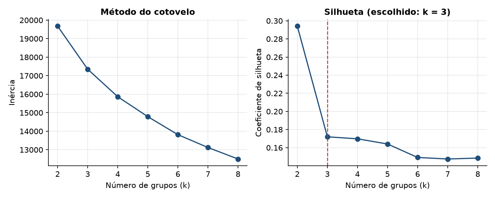
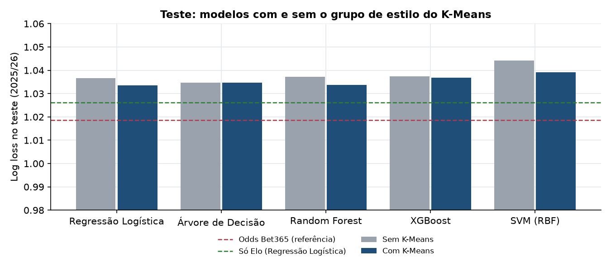
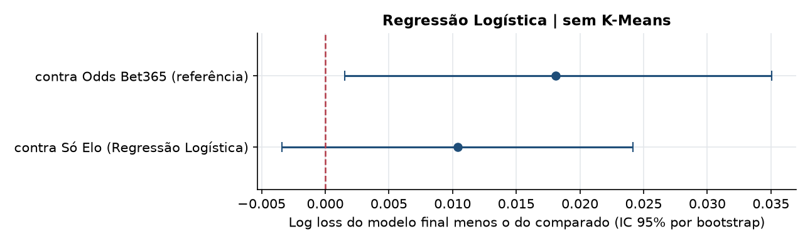
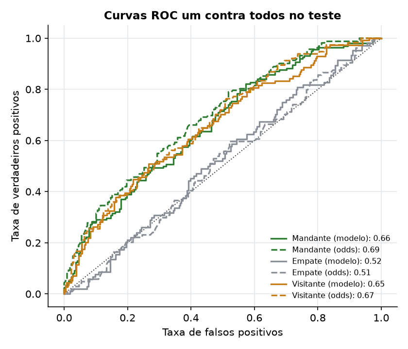
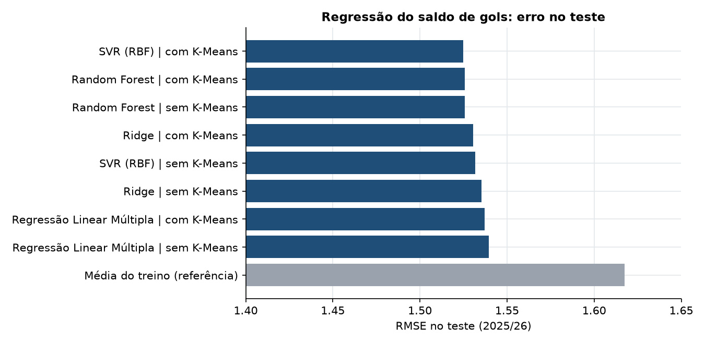

Previsão do resultado de partidas da Premier League
Árvore de Decisão, Random Forest, XGBoost, SVM e K-Means aplicados a 12 temporadas de jogos.
Murilo Cambruzzi
Vinicius Fabris
13/11/2026
Duas tarefas sobre o mesmo jogo: resultado e saldo de gols
Mandante, empate ou visitante
O modelo entrega uma probabilidade para cada resultado. A qualidade dessas probabilidades (log loss) pesa mais que o simples acerto.
Saldo de gols da partida
Gols do mandante menos gols do visitante, comparado com a média do treino como régua.
Doze temporadas da Premier League com estatísticas por jogo

- Fonte: football-data.co.uk, 2014/15 a 2025/26
- Gols, chutes, chutes no alvo, escanteios, faltas e cartões
- Mandante vence 44,6%, empate 23,4%, visitante 32,0% (desenvolvimento)
- Odds da Bet365 entram só como régua de comparação, nunca como variável
- Brasileirão descartado: poucos jogos com estatísticas completas
33 variáveis calculadas só com jogos que já aconteceram
Rating Elo
K = 20, vantagem do mandante de 65 pontos, time novo entra com 1450 e cada temporada devolve 25% da distância à média.
Forma recente
Média dos últimos 5 jogos em 12 estatísticas, deslocada em um jogo para não enxergar o próprio resultado.
Estilo de jogo
Média dos últimos 10 jogos (mínimo de 5) em 11 estatísticas. É a entrada do K-Means.
Pontos por jogo
Aproveitamento do time na temporada até a rodada anterior.
Jogos disputados
Quantos jogos o time já fez na temporada, para o modelo saber o peso do histórico.
Descanso
Dias desde a última partida de cada lado.
33 variáveis base, mais 8 do K-Means (grupo do mandante e do visitante em one-hot) somam 41.
Divisão temporal: o modelo nunca treina com o futuro
Agrupamento
O K-Means é ajustado só em 2014/15 a 2017/18.
Validação cruzada
Janela crescente em 7 temporadas, de 2018/19 a 2024/25. Cada rodada valida na temporada seguinte ao treino.
Teste
2025/26, 380 jogos, avaliado uma vez, depois de escolhidos os modelos.
Checagem extra
2026/27 parcial, 100 jogos, fora de toda decisão.
K-Means agrupa os times por estilo de jogo, em três grupos

Padronização, PCA com 90% da variância (7 componentes) e k escolhido pela silhueta na faixa de 3 a 6. Silhueta de 0,17 indica grupos pouco separados.
Grupo 1, ataque forte
2,02 gols marcados e 0,95 sofridos por jogo, 656 perfis de time.
Grupo 2, equilibrado
1,31 marcados e 1,30 sofridos, 1.192 perfis.
Grupo 0, defesa vulnerável
0,99 marcados e 1,61 sofridos, 1.062 perfis.
Cinco modelos, cada um com e sem o grupo do K-Means
| Modelo | Referência |
|---|---|
| Regressão Logística | base linear |
| Árvore de Decisão | árvore única |
| Random Forest | ensemble, bagging |
| XGBoost | ensemble, boosting |
| SVM (kernel RBF) | probabilidade calibrada |
- Pipeline com imputação pela mediana e padronização, quando o modelo precisa
- GridSearchCV minimizando log loss nas 7 rodadas temporais
- SVM calibrado com sigmoide, para entregar probabilidades
- Referências: frequências do treino, Só Elo e odds da Bet365
Na validação, a Regressão Logística fica a 0,002 do Só Elo
Log loss médio nas 7 rodadas temporais, versões sem K-Means. Menor é melhor. O eixo começa em 0,94.
O grupo de estilo não trouxe ganho consistente

- Validação: diferença de até 0,001 em log loss, nos dois sentidos
- Teste: melhora ou empata em quase todos os modelos, até 0,005 no SVM
- Nenhuma versão com K-Means passa a referência Só Elo
- Modelo final escolhido pela validação: Regressão Logística sem K-Means
No teste de 2025/26, ficamos atrás do Elo e das odds
| Modelo | Log loss |
|---|---|
| Odds Bet365 | 1,0185 |
| Só Elo | 1,0262 |
| Regressão Logística | 1,0366 |
| Frequências do treino | 1,0835 |
Checagem em 2026/27 (100 jogos): odds 1,012, Só Elo 1,025, modelo final 1,030. Mesma ordem.

- Contra o Só Elo: +0,0104, intervalo de −0,0034 a 0,0242 (inclui zero)
- Contra as odds: +0,0181, intervalo de 0,0015 a 0,0350
O empate é o resultado que nenhum modelo consegue prever

Saldo de gols: erro de 1,53 contra 1,62 da média, R² perto de 0,10

Final pela validação: SVR sem K-Means (C = 10, gamma = 0,0003).
O modelo simples supera a base, mas não o Elo nem as odds
- Probabilidades bem melhores que a base de frequências
- Modelos mais complexos não superaram a Regressão Logística
- Futebol tem muito ruído: o empate segue imprevisível
- Todas as variáveis vêm só do passado, e as odds ainda ficam à frente por pouco
- Teste com 380 jogos: intervalos largos
- Silhueta de 0,17: grupos de estilo pouco separados
- Hiperparâmetros ainda na borda da grade após duas ampliações
- Só uma liga e sem dados de elenco, lesões ou escalações